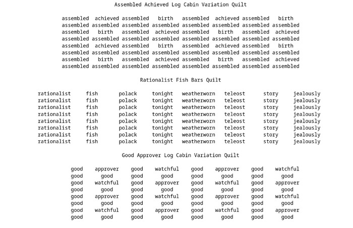
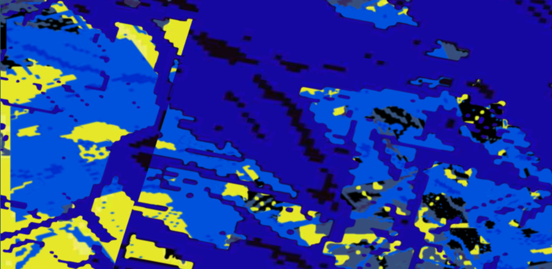

👽 Lee Tusman
Projects
Now
Info
Blog
Artists and Hackers

Quilt Poems
Borscht Belt System
Pennsyltucky
Self-Doubting System
232henley
Messlife
Context Collapsed
Technology Simply Explained
Exocolony
Distances
Pomelo
Gas Gallery Archive
Radio Free Aarhus
Lost Angeles
Archiving Artist-Run Spaces
Redhook
Processing Community Day NYC
Xzone
Babycastles Academy
Web World and Cooperative Computing
Sleeping Through the Pandemic
Puzzlescript Studies
Literal Mechanical Turk
SLOW FM
Drone Collector
Season clock
Studio Visit

Everyday code sketches